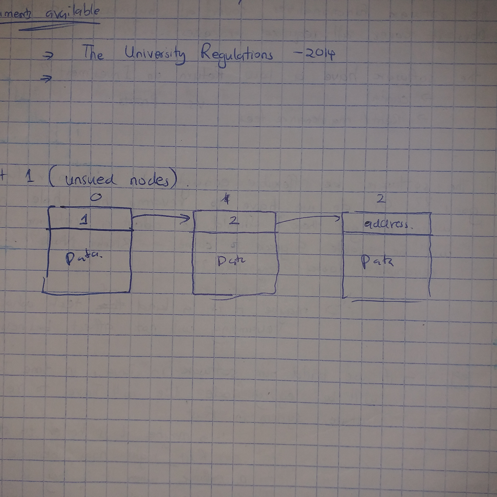

Abstracting the RAM
For you to abstract any object in the universe, you need to first understand the behaviour and characteristics of that object... or at least know some facts about it.
For you to abstract RAM, you need to know the physical layout of the RAM.
As described ib the Qemu Virt Docs, the RAM starts at address 0x8000_000 till infinity. You set the end of the RAM by specifying the RAM length in the Qemu configurations.
By the way, Here is the part of the documentation that shows the memory layout of the Machine : [undone] : qemu/hw/riscv/virt.c
Qemu loads the kernel binary file in the RAM. And that binary occupies the entire RAM. This is because in the linker script used to make the kernel binary, the kernel heap extends till the end of the RAM.
The RAM layout is as follows, the order and size of different sections have been specified in the linker script :
| Section_Name | Start_address | Size | End_Address |
|---|---|---|---|
| kernel text | _text_start (0x80000000) | (_text_end - _text_start) | _text_end |
| kernel rodata | _rodata_start | (_rodata_end - _rodata_start) | _rodata_end |
| kernel data | _data_start | (_data_end - _data_start) | _data_end |
| kernel bss | _bss_start | (_bss_end - _bss_start) | _bss_end |
| kernel Stack | _stack_start | 524 KB | _stack_end |
| kernel Heap | _heap_start | _heap_size(_memory_end - _heap_start) | _heap_end = _memory_end |
From the layout, we can say that the memory is divided into 2 distinctions :
- The part occupied by the kernel code and data (small part)
- The kernel heap (big part)
The Kernel small Part
This part will be abstracted by :
- extracting all start and end addresses from the linker script and making them available in our Rust modules as accessible variables. THis would make it easy to reference them.
- Using a struct to represent this kernel address info
The Heap
The Heap needs to be represented in 4096_byte pages. Each page will have a corresponding descriptor.
This means that there will be an array of descriptors. The array will contain (heap_size/ page_size) items.
Each descriptor will be a byte long. An Enum Value. The Value can only be :
- Empty
- Not Empty and is the First_allocated_page for a contiguous allocation.
- Not Empty and Not the First Bit
- Empty and The_Last Page for a contiguous allocation
As usual we provide all required getters and setters
Why are we using descriptors to keep track of the status of a page?
So in our page allocation system we need to achieve the following :
- Keep track of all free pages
- Keep track of all allocated pages
- Keep track of pages that have been used together
- Provide a function that receives a request of allocating certain number of contiguous pages... and it returns the address of the first page of the available contiguous pages
- Provide a function that receives an address of occupied pages and completely frees them.
We could implement our tracking system using one of the following methods :
-
Treating each page as a linked list node.  At the top of the Node, we have a pointer to the next node. So we create 2 lists... used nodes and unused nodes
- This method helps because there is no need for contiguous allocation of pages. This consequently means that we will not have fragmentation issues
- However this method has a couple of disadvantages :
- It takes more space. This is because you have to store the address of the next node + information as to whether it is the last block or not.
- The fact that memory allocated is not contiguous means referencing memory gets complicated. You cannot simply use straight foward offsets. You have to use virtual offsets that adds upon performance inefficiency.
- The pages are dirty. The top part of the page has the address of the next node. If a process wants to read or write to the page, it has to consider that some information contained in the page is useless to it. And when a couple of pages are read, the process has to filter out the next_address and start concatenating necessary data. This is unnecessary work
- There is no direct access within the linked list... you have to traverse it from the beginning each time. Thi is a very huge DEFFIFIENCY because we are dealing with the RAM. Ram data access is expected to be fast. If we has used an array or some tree structure, the CPU would have had faster access speeds.
-
We could use a 2-bit bitmap : THis is the fastest and most memory efficient method

-
We could use a bunch of descriptors. This would be the same as that of a bitmap execution. It is just that each descriptor takes 1 byte to describe a page while in the bitmap uses only 2 bits to describe a page (empty, taken, first, last)

More discissions about memory tracking are found here
We opt to use descriptors because :
- Even though Bitmapping is more memory efficient than using descriptors...Using descriptors is simpler to implement. Using Bitmapping would cut our memory usage by 75%. But for now...this is a learning project.... simplicity is our first priority.
- Using a Linked List has only one advantage ; it solves the defragmentation issue. The defragmentation issue is that : "Other methods allocate memory contiguously, meaning that there are bound to be 'holes'. Holes are free meory sapaces that are not contiguous. So one is forced to rearrange the whole memory in order to combine the holes. This defragmentation process causes a performance letdown + it causes non_determinism in terms of time, some embedded applications are time-crucial".
Other than solving defragmentation problem, it is quite memory inefficient, performance inefficient and hard to implement. If we implement a virtual paging mechanism on top of descriptors... fragmentation problems in the descriptor method becomes solved.
We need to find a method that :
- Allocates physical memory contiguously (for the most part, )
- The method needs to have a solution to defragmentation... without actually defragmenting anything.
- Is fast
- memory efficient
- Predictable (we are in the embedded space for cryig out loud... people... time matters)
Combining virtual paging and using descriptors fulfills all the above requirements
[undone] How about the deterministic_heap method you were proposing?
So what is this descriptor method of tracking?
A descriptor is an enum that Describes the status of a page. The value of the enum can be one of the following values : - page is empty - page has been taken and it's the first node for a certain contiguous allocation - page has been taken and it's neither the first nor the last node for a certain contiguous allocation - page has been taken and it's the last node for a certain contiguous allocation
- We divide the heap into pages that are aligned to 4KiB.
- We segment the heap into :
- Pages used to store descriptors - segment 1
- Pages used to store data - segment 2
- Under the segment 1, we store an array of descriptors. The number of descriptors is equal to the number of pages that can fit in the segment 2 of the heap.